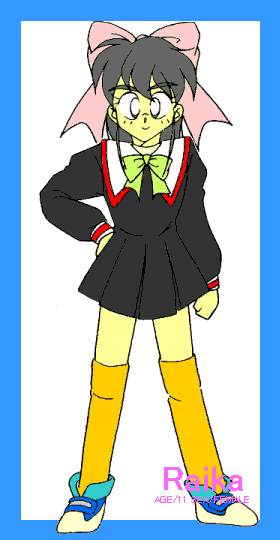
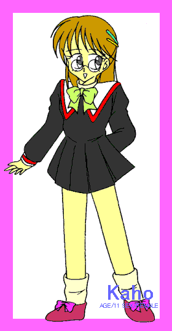
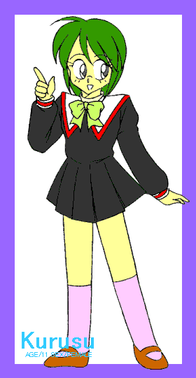
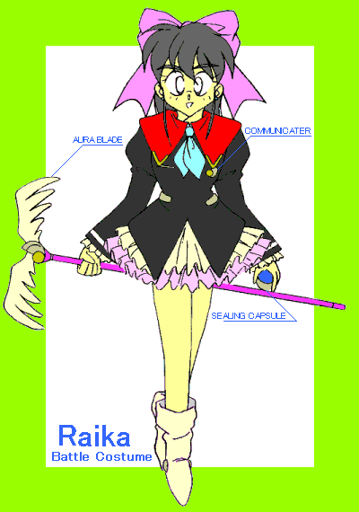

戻る
地球衛星軌道上。惑星連合宇宙艦「U.S.S.さんこう」艦内、医療室。
頼香はもけの手伝いで体構成チャンバーを点検中だ。
もけはプレラット星人。
みかけがハムスターなので、一人(?)ではヒューマノイド用のチャンバーを点検するのは無理だ。
「これで俺の元の体の複製ってのは出来ないのか？」
「頼之しゃんのオリジナルパターンがないんで無理でちゅ」
頼之というのは頼香が今の体になる前、男性の時の名前だ。
ある事故のせいで、今はライカという少女の体に頼之の意識が入っている形になっている。
頼之の名前を呼ばれるのも久しぶりだ。
今の頼香にとっては別人のことを言われた気もする。
「頼香ちゃん、元の体に戻りたいんでちゅか」
元の体に戻るとか考えてもいなかった。戻りたいのか？
戻りたい気もするし、そうでない気持ちもある。
そしてふと祐樹のことを思い出す。なんとなく気になる存在だ。
そうだよな、元に戻れないんだし、今更男に戻っても・・・・
「結構頼香としての生活にも慣れてきたしな」
そういって、椅子に腰掛けてふっとため息をつく。
急に頭が引っ張られた。
見るともけが頼香の長い髪の毛をほお袋にもしゃもしゃ入れているところだった。
「いててて、何すんだ」
「へけっ」
「誤魔化すな、おのれは。いてーっ」
髪の毛を抜かれてしまい、ちと涙目の頼香。
「ごめんでちゅ。あ、手伝いはもういいでちゅよ。どうもでちた」
「まったく、このねずみは」
「『ねずみ』はひどいでちゅ」
少し怒って医療室を出て行く頼香。もけは今度はコンソールの上に飛び移る。
「これから作れまちゅかね・・・」
頼香が出ていったことを確認して、コンソールを叩いていくもけ。
「コンピューター、以後の操作はレベル５のプロテクトでちゅ」
レベル５プロテクト———頼香のような少尉クラスではアクセスできないレベルだ。
一方ブリッジでは、果穂と来栖が広範囲イーターレーダーを覗いていた。
「最近イーターの数が減ってますね」
「あのむかつく女が持ってってるんじゃないの。市内になんか全然いないよ」
むかつく女というのはプラム=スピナー博士のこと。
来栖はお子様扱いされたことを根に持っているらしい。
ここのところ、イーターの回収は頼香達とスピナー達の競争といった感じになっている。
頼香達は連合の指示。スピナー達は研究のため。
目的は異なるが、地球に逃走したイーターの数は着実に数を減らしていた。
レーダーを見ていた果穂が全くの空白地帯があるのに気づく。
「おや？この辺バックグラウンドノイズもないのは変ですね」
「そこ御越山だよね。今週、学校のキャンプで行くよね」
「その時調べますか。頼香さんにも言っておきますね」
ちょうどその時頼香がブリッジに顔を出す。
下校時に買ってきたドーナツの箱を持っている。
「一段落したら休憩しようぜ」
「あ、頼香さん、そっちはもういいんですか」
「ああ。先にお茶入れてるよ」
「あ、あたしも」
「来栖、あわてなくてもお菓子は逃げないって」
仕事よりもお菓子が大事な年頃の来栖。いらぬ心配をしていたりする。
「頼香ちゃんが食べちゃうと困るもん」
「誰が食べるか、誰が」
らいか大作戦５
作：かわねぎ
画：ＭＯＮＤＯ さん
キャンプ当日の朝。頼香と果穂のマンション。
今日は頼香も果穂もジャージ姿だ。
「ふんふふん♪ふふん♪」
果穂がキッチンで料理をしている。その横でおにぎりを握る頼香。
普段は交代で朝食の準備をするのだが、今日は二人で作っている。
「きゃんぷ♪きゃんぷ♪ふふんふん♪」
果穂はなにやら即興の歌詞をつけて、ご機嫌のようだ。
「なんだ？その歌」
「キャンプの歌。作詞作曲、庄司果穂」
「ずいぶんご機嫌だな」
「小学校のキャンプなんてずいぶん久しぶりですから」
「俺は９年ぶり」
冷たくかわして次のおにぎりを握る。
そんな頼香を気にせず、即興曲を口ずさんでいる果穂。
「きゃんぷふぁいや〜♪ふぉ〜くだんす〜♪っと」
「フォークダンス、男子と踊るんだぞ」
「女子の方が三人多いって知ってました？」
「それが？」
「上手く三人の中に当たれば、女子と踊り放題ですよ」
「はあ・・・」
何か遠い目になっている果穂。それでもきちんと手元では唐揚げの油が音を立てている。
頼香もおにぎりを握る手は休めない。二人で食べるには結構多い量だ。
それもそのはず、一人暮らしの祐樹の分も作っているのだ。
そのせいか、頼香も結構楽しんで作っていたりする。
やがて準備も出来た頃、チャイムが鳴る。
「あ、は〜い」
果穂より先に頼香が答えてドアのカギを開ける。
その素早さはチャイムが鳴るのを待っていたかのようだ。
案の定、祐樹が立っていた。今日はキャンプでクラスの引率。
「おはよう。悪いね。弁当まで作ってもらって」
「いいよ。二人分も三人分も一緒。それより朝ご飯も食べて行くんだろ」
「いつも悪いね。ご馳走になるよ」
「そのつもりで作ってるって。さ、入った入った」
このところの朝食や夕食は三人＋二匹で取っている。一人暮らしの祐樹も一緒に食べに来るのだ。
今日もいつもよりにぎやかな朝食が始まる。

キャンプ場までバスで行き、お昼は御越山のキャンプ場にある広場。
めいめいがレジャーシートを広げて、お弁当を広げ始めた。
頼香、果穂、来栖のいつもの３人も一緒だ。
「へぇー、二人で作ったんだ」
「よかったら来栖さんもどうぞ」
「わーい。いっただきまーす」
「作りすぎたから丁度いいな」
「ゆーきさんの分、どうしましょうか」
「いいよ、あんな奴」
とたんに不機嫌になる頼香。
その頃祐樹はほかの女子の「先生お弁当一緒に食べませんか」攻勢にあっている最中であった。
頼香は差し出すのが出遅れてしまい、お弁当１人分浮いてしまった。
こんなことなら朝のうちに渡しておくんだったと後悔する。
自分で作ったおにぎりを食べながら、果穂と来栖相手に愚痴をこぼしていた。
「まったく小学生にデレデレして」
あなたも小学生でしょう、と果穂が心の中で突っ込む。
「せっかくお弁当作ったのにね」
「人の苦労も知らないで」
楽しんで作っていたくせに。
「ゆーき先生のこと好きなのにね」
「当たり前だろ。まったく」
本音をこぼしていますね。頼香さん気づいてないし。
頼香の愚痴を聞いている果穂と来栖の所に祐樹がやってきた。
「頼香さんたち、ここだったんだ」
「何だよ今ごろ」
「約束だったよね。お弁当」
そう言いながらレジャーシートの上に座る祐樹。
祐樹が来てくれたのはうれしいが、素直になれない頼香。突き放すように言う。
「ゆーきの分はもう無いよ」
「頼香さん、そんな事言わないで。はい、どうぞ」
果穂が祐樹にお弁当を薦める。もう食べ始まっていたので数が減っているが、他の生徒の所でも少しずつお腹に入れていたので祐樹には丁度良かった。
「ありがとう。うん。美味しいな」
「だろ。俺が作ったんだから」
「頼香ちゃんさっきまで怒ってなかったけ？」
さっきまでの態度はどこへやら、自身満々に言う頼香。確か果穂との合作のはずだが。
「君達、将来いいお嫁さんになるよ」
そんな事を言いながら食べる祐樹に果穂がお茶をすすめる。
「あ、ゆーきさんお茶もどうぞ」
「どうも。このお茶の味、何か変わってるね」
「新製品なんですよ。口にあいませんでした？」
「いや、おいしいよ」
「よかった」
果穂は何か含み笑いをしているようだったが、それには誰も気がつかなかった。
頼香の機嫌も直り、朝以上ににぎやかな昼食となっていた。
昼食時間も終わり、自由時間となる。
引率の先生方は夕食準備に先だって何か打ち合わせがあるようだ。
「ごちそうさま。それじゃ僕は打ち合わせの後男子の方の仕事を見てくるから」
「男子の？」
「薪割りとかまど作りと飯盒炊きもか。君達は調理の方だね」
小学校でも既に男女の役割という物を暗に押しつけているものだ。
「ゆーき、今晩、わかってるね」
今日はキャンプだがイーター調査というのもある。
みんなが寝静まった夜に調査しようと言う訳だ。
大体の場所は分かっているので、それほど時間がかかるものではないが。
祐樹が行ったのを見届けて、頼香がつぶやく。
「男子は力仕事か」
「頼香ちゃん、そっちの方が良かった？」
頼香や果穂の過去を知らない来栖が聞いてくる。
「うーん、どうだろうな」
以前だったら料理の準備の方が面倒だと思っていたが、最近はそうでもなくなってきた。
力仕事は今の年齢では男女差があまりないのだが、あまりやりたいとも思わない。
体に思考が合ってきているのだろうか。
口調は相変わらずだが、味の好みや考え方が女性化していると言われると否定できない。
そのへんは果穂も同じような物だった。
「さ、私達女子はお料理っと。頼香ちゃんも果穂ちゃんも上手だもんなあ」
「来栖さんは料理しないんですか」
「うちでは料理っていうより手伝いだけ」
「やってみると楽しいですよ」
「今日はカレー作るんだよね」
「そうそう、このハーブを入れると味がおいしくなりますよ」
果穂がリュックからハーブの入った包みを取り出す。来栖が興味津々にのぞき込む。
「へー、果穂ちゃん本格的。でもルウは普通の売ってるやつでしょ」
「もけさんから貰ったんですよ。入れるだけでも違いますよ」
「じゃあ楽しみだね」
「いっぱいあるんで他のクラスにもお裾分けしましょう」
「うん、いいんじゃない」
その後は他の女子に混じって調理の準備を始めた。
果穂が持ってきたハーブも各クラスに配った。
やがて炊事場にはカレーの良い香りが立ちこめてきた。
夕食、片づけ、キャンプファイヤーと時間が過ぎていった。
フォークダンスも終わり、それぞれテントに戻る。
果穂は女子と踊れなかったのか、残念そうだ。
テントに戻ってもこういう時は皆遅くまで起きているというのは今も昔も変わらない。
だが、騒ぎ疲れたのか、早々に教師も生徒も全て眠ってしまった。
頼香達四人を除いて。
それぞれテントを抜け出した頼香達はキャンプファイヤーをしていた広場に集まる。
明かりは月だけだが、満月に近いので結構明るい。
虫の鳴き声が静けさをより一層強調している。
「みんな眠ってるおかげで見つからなかったな」
「さすがテランナー・レンドルム。効きますね」
「お前、カレーに入れたハーブって」
「ただのテラン星の睡眠導入剤ですよ。遅効性の」
眼鏡をちょいと直してにっこり笑う果穂。
かわいい笑顔で結構えげつない事をするものだ。
あまり怒らせないほうが良いかもしれない。
ちなみにテラン星は連合の半数のヒューマノイドの出身星。ライカもテラン人だ。
「何で俺達は眠らないんだ？」
「抗睡眠剤入りのお茶を飲んでもらいました。４人だけ」
「お昼のあれか」
「ちょっと副作用もありますけどね。気にならないと思いますけど」
頼香は通信バッチと叩き、宇宙艦さんこうへ通信を送る。
「もけ、転送装着」
頼香達３人は一瞬光に包まれ、次の瞬間、戦闘服に身を包んでいた。
先日レーダーで何も映らなかった場所は分かっているので、すぐに辿り着けた。
それはキャンプ場から少し離れた森の中。
果穂が携帯型スキャナーで調べてみると、小型宇宙艦サイズの物体が埋まっていることが分かった。
というより、スキャナーの反応では宇宙艦そのものである。
「船体が埋まっていても入口はあるはずだから、それを探そう」
「二手に分かれて探しましょう」
「それじゃ、俺と来栖、果穂とゆーきで探すか」
「いえ、私が来栖さんと行きます」
果穂が来栖に目配せする。来栖もあわててうなずく。
入口を見つけたら通信バッチで連絡することを確認して、二手に分かれる。
別れ際に来栖が頼香にそっと耳打ちした。
「ごゆっくりね」
「あの、おい・・・」
駆けていく来栖達に声をかけようとするが、早々に行ってしまった。
ぽつんと残された頼香と祐樹。
「僕なら分かるのに・・・頼香さん、僕たちも行こうか」
「ああ」
ハンディライト片手に入口を探す頼香達。なかなか見つからない。
来栖の言葉についつい祐樹を意識してしまう頼香。
黙っていると余計に意識しそうなので、声をかけてみたが、少々声がうわずってしまった。
「ねえ、ゆーき、あ、あのさ」
「ん？」
「大学とかで友人っていうか、好きな女の人とか・・いるのか？」
「いや、全然いない。彼女はね」
即答。それはそうだ。祐樹は大学のコンピューターをハッキングして学籍を得ている。
大学には行ったこともあるが友人は無いといっていい。
まして祐樹の場合、女性の恋人などいるわけがない。
「そっか」
少し安心する頼香。続けて自分のことを言いたいのだが、言葉が続かない。
どもりながら、やっとの事で言葉を絞り出す。
「それじゃ、お、お、俺のことどう思う？」
「そうだな、可愛いけどお転婆さんって所かな」
そう言いながら頼香の頭に軽く手を乗せる。
祐樹の大きい手の暖かみを感じる。
「今のところ可愛い生徒さ」
その祐樹の言葉に、きっとなって祐樹の方に体を向ける頼香。
「生徒って、一人の女の子として見てくれないの？ 小学生だから？ 子供だから？ 」
まくし立てられてとまどう祐樹。
もちろん祐樹も頼香が自分に好意を寄せていることに気づいていない訳ではない。
ただ１０歳近い年の開きを考えると、どのような態度を取ればよいか困惑してしまうのだ。
自分も１０年前は年上の異性に憧れていたが、憧れで終わってしまった経験もあった。
「そりゃ頼香さんは誰から見ても可愛いと思うよ」
「そうじゃなくてさ・・・」
「え？」
「もういい！」
祐樹の答えにある種の鈍感さを感じ、話題を切り上げる頼香。
この辺、頼香も少女ぶりを発揮しているのだが、そんな自覚はない。
「そ、それよりさ、今週で実習が終わっても、家に来てくれないか？」
「頼香さん達さえ良ければ」
「うん。ご馳走するよ。あとお願い。今度から『頼香』って呼んでくれないか？」
「学校外ではそうするよ。実習終わっても」
「約束だからね」
小指を立てて祐樹に突き出す頼香。
「じゃ、ゆびきり」

一方、来栖達。
こちらでは入口は簡単に見つかった。
連合の宇宙艦なので標準的な物なら入口を見つけるのはそう難しいことではない。
「入口見っけ」
「さて、どうしましょうか。頼香さん達を呼びましょうか」
「急がないんだし、もうちょっとして連絡しといたら？」
「そうですね。その間にロックされていないか調べてみましょうか」
そう言って入口のドアを開けようとする果穂。
力一杯開けてみようとするが、開かない。
「やっぱりロックされてますね。解除方法を探ってみますね」
果穂はそう言ってスキャナーを見ながら入口のタッチパネルを操作し始めた。
そんな果穂に来栖が後ろから声をかける。
「あの二人、上手くやってるかな」
「頼香さんって恋愛経験無かったはずですよ」
「果穂ちゃんは好きな人いないの？」
「え、私ですか？」
意表をつかれてタッチパネルをダブルクリックしてしまう。
果穂は自分が男性を好きになろうとは思っていない。
だが、今の頼香を見ていると、いずれは自分も男性を意識する事になるかも知れない。
今のところは願い下げだが。
「うーん、今のところ、いい人いませんね」
「クラスにも結構かっこいい人いるじゃない」
「例えば？」
「委員長の工藤君とか、三輪君とか、木村君とか、・・」
「へー、その辺が来栖さんの気になる人ですか」
果穂の詮索するような口調にしまったと言った顔をする来栖。
ついつい口が滑ってしまった。
「いや、その・・」
「工藤君ですか？」
「だ、誰にも言わないでね」
「来栖さんのこと応援しますよ」
「ありがと」
そんな他愛もない話をしているときも果穂の手は休めていない。
単純なパスワードロックなのはわかったので、後は総当たりで試してみるだけだ。
自動でパスワードの検索をするようにセットする。
その作業が済むと、通信バッチを叩いて頼香達に連絡をする。
「頼香さん、ゆーきさん、入口を見つけました。来てください」
一連の作業を見ていた来栖がふとつぶやく。
「いいの？二人の邪魔して」
「あんまり時間かかってもね。私が邪魔者になればいいだけですから」
「果穂ちゃん恨まれるよ」
果穂は肩をすくめてそれに答えた。
「果穂か？ わかった」
「頼香、行かなきゃね」
そう言って、腰を落として顔を同じ高さに持ってくる祐樹。
そして頼香の頬に軽く口づけをする。
「え、あ、ちょ、ゆーき・・・」
頼香の顔がさっと赤く染まる。
以前はこんな事で恥ずかしがるような事はなかった。
考え方が少女になってきているのだろうか。
「今はここまで」
「ちょっと・・・生徒に手を出しちゃまずいだろ・・・」
「生徒扱いは嫌なんだろ？ ほんの挨拶だよ」
「う・・そうだけど・・・もう、行くぞ」
恥ずかしさを誤魔化すかのように駆けていく頼香。
ただの挨拶だけだったとしたら逆に不満だが。
不時着した宇宙艦の入口前に集まる頼香達。
「遅いよ頼香ちゃん。何かうれしそうだけど、どうしたの？」
「いや、その、なぁ、ゆーき」
来栖も詳しい事情は知らないが、一応突っ込んでみた。あわてる頼香の態度が面白い。
「そ、それよりここから入れるのか？」
「見つけた入口はここだけだよ。今ロックを解除してるって」
表情を引き締めて、入口に書いてある艦名のパネルを読む頼香。
「連合宇宙艦『U.S.S.イントリュー』か」
艦名を聞いて祐樹が説明を加える。
「イーターを乗せて研究所から脱出させたんだ。内部はイーターの巣」
「詳しいんだな」
「当事者だからね。こいつにイーターを乗せて飛ばしたのは僕とスピナー博士だ」
「でも何でこんな所に」
「全てオートでやったんだ。おかげで不時着地点を探すのに苦労したよ」
「いい加減なんだな」
「連合にバレそうで、せっぱ詰まってたからね」
苦笑いする祐樹。おもむろにコンソールに近づき、パスワードを入力する。
入力したパスワードが一致するのを見て、少し苦々しい表情になる。
ドアはあっさり開いた。
「最初からゆーきさんにお願いすれば良かったですね」
ちょっと不満そうな果穂。
「何だったんですか？ パスワード」
「・・・昔の名前だよ」
答える祐樹の口調は素っ気ない物だった。
入口はつい最近も使われた形跡があった。おそらくイーターが出入りしていたのだろう。
注意しながら内部に入る頼香達。
早速現れる不定形イーター。
とっさにスティックを構えてオーラブレードを展開する頼香。
ところが頼香達の姿を認めるや否や、奥へと逃げていった。
「こら、待て」
さらに艦内の通路の所々にイーターがいたが、襲いかかってくることはなく、すぐに逃げてしまった。
「変だな。いつもなら向かってくるはずなのに」
「なんか怯えてるみたいだね」
「でもどういうことだ？ ゆーき？」
手持ち無沙汰にスティックを振り回しながら、後ろにいる祐樹に尋ねる頼香。
「さあ。ラボに行けば何か分かるかも」
「ラボにどれだけのイーターがいるかだな」
そう言っているうちに頼香達の脇を走り去っていくイーターが一体。
「私達に目もくれませんね」
「逃げていった方向がおそらくラボだな」
頼香達はラボの方向に向かっていった。
ラボの扉を開ける頼香。
中には十体余りのイーターが身を寄せ合っていた。
イーターに表情があるとすれば、恐怖を表していたことだろう。
「ほんと怖がってるみたい」
「封印するんですか」
「傷つけずに封印できればいいんだが」
そう言ってスカートのポケットからシーリングカプセルを取り出す頼香。
戦う必要がなければそれに越したことはない。
「お願いです。見逃してください」
そのとき、一体のイーターが前に出てきて、人型の形を取った。女性形だ。
「同化しないでください」
他のイーターを守るように立っているが、表情は頼香達を恐れているようだった。
普段襲いかかるイーターとは違うことを感じた頼香は、手にしたカプセルをポケットに戻し、イーター女性に尋ねた。
「あなたは？」
「固有の名前はありません。ラボではNo.58と呼ばれています」
「俺たちのようなオーラ値の高い者は格好の獲物じゃないのか？」
「吸収できるだけの力を持った者だけです。私達にはそんな力はありません」
女性イーターの口から「イントリュー」艦内にいるイーターについて語られた。
比較的力のあるイーターは艦を出て、人間のオーラを吸収しに行ったこと。
残されたイーターは細々と植物の生命力を取り込んでいたこと。
スピナー博士が以前からイーターを少しずつ回収していたこと。
最近では博士によるイーターの回収の頻度が速くなっていること。
「私達は博士達に実験動物として扱われてきました。幸いこの星に来て自由な環境を得られたのです。できればそっとして欲しいんです」
「でも君達に危害を加えられた人間だっている」
頼香も果穂もそうだ。イーターがいなければ今の体になってはいない。
「全部がそうではありません。私達の命を吸わないでください・・・」
「ちょっと待ってくれ。俺達は何も君達を殺そうって訳じゃない」
「確かに博士達とは雰囲気が違いますが・・・」
「惑星連合として君達を保護するんだ」
「保護って、拘束・・・ですよね」
頼香達の行っている封印・・・イーターにとっては自由を奪われる物である。
今まで封印を行ってきた頼香達だが、そう言われるのは初めてだ。
「安全に保護するだけだ。連合本部へ安全に・・・」
「連合に連れて行かれた後はどうなります。また実験ですか」
女性イーターの指摘に言葉を詰まらせる頼香。
そこでふと、女性イーターは祐樹に向かって疑問に思ったことを告げた。
「ところで、あなたからも同族の波長を感じますが・・・」
「僕も君達を長いこと研究していたからそう感じるんだろう。気のせいだよ」
「そうですか。まるで博士と・・・いや、なんでもありません」
刺すような祐樹の視線に言葉を飲み込む女性イーター。

「その先は私が説明するべきかな、ユキ」
「スピナー博士！」
頼香達が振り向くと、ラボの入口にいつの間にか、白衣姿の若い女性と男性が立っていた。
女性は以前会ったプラム=スピナー博士。
頼香たちの目の前で女性型イーターと融合してこの姿になっている。
だが、男性の方は見たことがない。助手だろうか。
祐樹は鋭い視線をスピナーの方に向けている。
スピナーが口を開く。男性のような口調で話し出す。
「また連合の小娘か。回収の邪魔をするなと言ったはずだ」
「また小娘って。あんたこそ私達の邪魔しないでよ」
来栖のスティックを握る手に力がこもる。
「もともと私の開発した物だからな」
「こんなに怖がってるのにあんた達には渡せないよ」
「より強いイーターを創り出すためだ。シェンナ、同化するんだ」
シェンナと呼ばれた男性が進み出る。
雰囲気がどことなく祐樹に似ているが、表情は冷たい物だった。
とっさにオーラのバリヤーを展開する来栖。
祐樹がシェンナを見て来栖達に呼びかける。
「彼はイーターの強化体だ。注意した方がいい。相当強力だ」
「あのイーターが私達の同族を同化しているのです。私達は同族を殺めるようなことはしません。それなのに彼は・・・」
女性イーターもシェンナを知っているようだった。それも悪い形で。
頼香がオーラブレードを構えて前に出る。
「シェンナとか言う奴は俺が引き留める。果穂、その間にこいつらを頼む」
シェンナの右腕から赤茶色の光がオーラブレードのように収束する。
頼香のオーラブレードと刃を交える事、数回。
「来栖、バリヤーの中に入れるな。果穂、封印すれば同化は防げる」
押されながらも来栖達に声をかける頼香。
その隙にシェンナの刃が鞭状に拡散し、頼香のオーラブレードを絡め取ろうとする。
「そう来るか！ だが！」
オーラブレードを消すことで鞭を避け、再度ブレードを展開する。
空振りに終わったシェンナの鞭が再び剣状に収束する。
同時に空いている左腕から槍状の光が伸び、来栖のバリヤーを貫こうとしている。
「まだ余裕があるのか！」
表情も変えず無言で赤茶色の光を操るシェンナだった。
果穂がシーリングカプセルを手にして女性イーターを説得する。
「約束します。連合で人体実験をするようなことはしません」
「同化か拘束か・・・私達の選択肢は狭いんですね」
「私達を信じてください」
「私達だって生きているのですよ」
「でも、このままでは同化されますよ。いいんですか」
「・・・」
向かい合う果穂と女性イーター。
「果穂ちゃん、いつまでも保たないよぉ」
スティックを握り直し、果穂を急がせる来栖。スピナーに軽口を叩く余裕もない。
「・・・」
「ごめんなさい。封印します」
そう言ってイーターの封印を始める果穂。
「シーリング！」
女性イーターの後ろにいる不定形イーターを封印していく。
力の弱いイーターならそのまま封印できる。
抵抗をした場合は弱らせないと無理だが。
「有無を言わさずですか」
「でも、これ以外あなた達を守れる保証はありません。力づくでも・・・」
スティックを展開する果穂。ブラフなのだが、通じるか・・・
「・・・仕方ないですね。約束は守ってください」
「はい。では・・・シーリング！」
最後まで無言の抵抗をしていた女性イーターも封印して、この部屋にいたイーターの封印は完了した。
イーターが封印されたのを見て、スピナーは唇を噛む。
「三対一ではまだ分が悪いか。まあいい。他の部屋のイーターは同化したしな。シェンナ、戻るぞ」
シェンナはそれを聞くと、来栖に向けていた攻撃の手を頼香に集中させる。
「くっ・・」
頼香は両手でブレードを持ち受け流そうとするが、力負けしてしまう。
ラボの壁に跳ね飛ばされてしまうが、衝撃は戦闘服が吸収してくれた。
「いずれイーターは回収させてもらう。シェンナはまだパワーアップできるからな」
「なにっ」
「小娘三人でどこまでかなうかな？」
そう言ってスピナーとシェンナはラボから出ていった。
残された頼香達。来栖が追いかけようとするが、頼香が止める。
「待ちなさいよ！」
「来栖、無理だ。かなう相手じゃない」
頼香に駆け寄る祐樹。
「頼香、大丈夫か？」
「ああ。博士は、俺たちを見逃してくれた・・・のか？」
「研究以外は眼中にない人だからね。必要がなければ頼香達と一戦交えるなんて考えないはずだ」
「必要がなければ、か。シェンナ・・・やっかいだな」
夜も更けて。
既に果穂も来栖も眠っている。だが頼香は全然眠くならない。こうなると夜は長い。
テントを抜け出して外に出てみる。山の夜は冷え込む。
広場に出てみると、焚き火の明かりが見えた。祐樹だった。
「頼香も眠れないのかな？」
「ゆーきもか」
「どうやら果穂さんの言ってた副作用みたいだね」
「果穂も来栖もぐっすり寝てるぞ」
「僕たち二人だけ。ってことはテラン人だけ効くんだろ」
「あ・・・それでか」
頼香も体の組成は地球人ではない。
「寒いだろ。隣に来るといいよ」
祐樹の隣にちょこんとすわる頼香。薪がパチパチと音を立てている。
祐樹が羽織っていたパーカーを頼香にもかけてくれる。
これ幸いと祐樹の方に身を寄せる頼香。
「ありがと。あったかい」
暖かいのは焚き火とパーカーのせいだけではないようだが。
「そう言えば頼香の本名って聞いてないな」
本名・・・男の時の名前かと一瞬身構えるのが、聞いているのはテラン人としての名前らしい。
「あ、ライカ。ライカ・フレイクス。ゆーきは？」
「ユウキ・マクファーデン」
お互いある意味嘘をついている訳なのだが、分かるわけがない。
今の彼らの姿を表す名前としては間違ってはいない。
焚き火の炎を見ながら頼香がつぶやく。
「本当に正しい事してるのか分からなくなったよ」
「あのイーターかい？」
「ああ。イーターから見れば俺たちも博士も一緒だな」
拘束ですね・・・その言葉が頭をよぎる。
「それは違う。博士は自分の興味だけでイーターをいじっている。連合士官なら連合を信じなよ」
「連合か・・・そうだな。でもゆーきってたまに怖い顔するな」
「そうかい？」
「博士のことになると。二人の間で何かあったみたいだし」
「恨んでるいるんだよ・・・」
二人の間に静寂が走る。祐樹もそれ以上話したくないらしい。
少し祐樹から体を離す頼香。
「ごめん。立ち入ったこと聞いて」
「いや。頼香と話していると子供——あ、悪い意味じゃない。子供とは思えないな。大人と話しているようだよ」
それはそうだ。頼香のメンタリティーは２０代前半(の男性)だ。
最近は子供っぽくなったかも知れないが・・・
薪を焚き火に放り込む頼香。
「今週で実習終わりだな」
「そうだね。アカデミーと違って面白かったよ」
「寂しくなるな。離れたくないよ・・・」
そういってまた体を寄せる頼香。外見相応の少女の表情になっている。
「おいおい。同じマンションにいるだろ。いつでも会えるよ」
「そうだけどさ・・・」
今思いついた、という感じで付け加える。
「今度の休みにさ、どっか連れてってくれないか？」
「え？」
「な、いいだろ」
「どこに連れてけばいいんだよ。地球の人気スポットは知らないよ」
「これから調べろよ。エスコート頼むぜ」
「頼香はどこに連れて行って欲しい？」
「そうだなぁ・・・・」
夜が明けるまでまだ時間がある。頼香と祐樹のおしゃべりはまだ続いていた。
翌朝——
生徒も教師もぐっすり眠れたようで、気持ちよい朝を迎えた。
頼香と祐樹の二人を除いて。
「眠い・・・」
あとがき
らいか大作戦第５話です。
今日はキャンプ。イーター退治(?)もついでにこなしてもらいました。
今回頼香は祐樹に好意を寄せていることを自覚しています。
ところが祐樹の方はどこか距離を置こうとしています。ちょっとすれ違ってますね。
今回、ＭＯＮＤＯさんに頼香達のイラストを描いてもらいました。感謝です。うちの頼香達もよろこんでおります。今回は頼香達はほとんどジャージ姿で制服のシーンがなかったのですが、普段はこんな感じと言うことで・・・
当初６話完結になるかと思ったのですが、もう少々伸びそうです（８話くらい？）。完結までもう少々おつきあい願います(m__m)
＜予告(らしきもの)＞
「こんな感じでいいかな？ どう？頼香ちゃん」
「へ〜、俺ってこんなに・・・」
「あのなぁ。絶・対・ついてくるなよ」
「そんな野暮なことしないって。あ、でも面白そうかも」
「急ぐお嬢さんだな。もう少し女の子らしい話し方をしたらどうだ」
「それはお互い様だ」
「ねえ、なんで私までこんな格好しなきゃならないの？」
「来栖さんもかわいいですよ。こんな時にはこんな格好しなきゃ勿体ないですよ」
「そんなの聞いてないよ〜」
戻る
※匿名・仮名で構いません。
※書き込み後は、ブラウザの「戻る」ボタンで戻って下さい。